✅ Probat
Afirmații susținute de dovezi verificabile. Sursele sunt lângă fiecare, ca să le puteți controla singuri.
775 verificări, cele mai noi întâi. Vezi și: ❌ Contrazis · ⚠️ Contestat · 🔍 În verificare

ANRE a aprobat: gazul se scumpește cu circa 41% în Republica Moldova, de la 1 septembrie
Pe 21 august 2026, Agenția Națională pentru Reglementare în Energetică a aprobat un tarif de 20,30 lei/m³ cu TVA pentru gazele furnizate de Energocom…

Anul școlar începe pe 1 septembrie cu o lecție despre independență, la 35 de ani de la Declarație. Ce prevede structura anului
Anul de studii 2026-2027 începe pe 1 septembrie în toate instituțiile de învățământ general din Republica Moldova, cu o lecție tematică — „Independența care…

35 de ani de independență: Chișinăul se închide cinci zile pentru parada de 27 august. Ce se probează din anunțul primăriei
Republica Moldova împlinește pe 27 august 2026 treizeci și cinci de ani de la declararea independenței, marcați printr-o paradă militară în centrul…

Două treimi din exporturile Moldovei merg în Uniunea Europeană. Cifrele oficiale pe primul semestru din 2026
În ianuarie-iunie 2026, exporturile Republicii Moldova au însumat 1.650,5 milioane de euro, cu 12,5% mai mult decât în aceeași perioadă din 2025. Uniunea…
Apelul în dosarul „Frauda bancară”: procurorii cer 25 de ani pentru Plahotniuc, iar ședința a fost amânată după două alerte cu bombă
Condamnat pe 22 aprilie 2026 la 19 ani de închisoare, Vladimir Plahotniuc a ajuns pe 24 august în fața Curții de Apel Centru. Procurorii cer majorarea…
Televiziunea de stat iraniană a difuzat un videoclip care amenință viața lui Barron Trump, cu o „recompensă” de 10 milioane de dolari
Un canal al televiziunii de stat iraniene, afiliat Gărzii Revoluționare (IRGC), a difuzat pe 24 august 2026 un montaj intitulat „Unde și cum ar trebui să-l…

Nicușor Dan confirmă oficial eșecul Legii salarizării: România pierde 770 de milioane de euro din PNRR
Președintele Nicușor Dan a anunțat miercuri seară, 26 august 2026, că PSD, PNL, USR și UDMR nu au ajuns la un consens pe Legea salarizării unitare și că țara…

România a primit prima plată de 2,5 miliarde de euro prin instrumentul european de apărare SAFE
România a încasat miercuri, 26 august 2026, prima tranșă din programul european de apărare SAFE — 2,5 miliarde de euro, adică 15% din alocarea totală de 16,7…
Sindicatele din educație resping „ultima variantă” a legii salarizării, cu șase zile înainte de termenul-limită de 31 august
Trei federații sindicale din învățământ — FSLI, „Spiru Haret” și „Alma Mater” — au respins public, pe 26 august 2026, ultima variantă a proiectului legii…
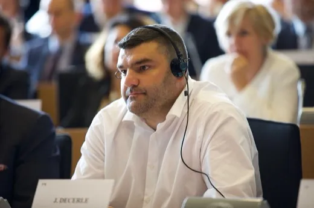
PPE și Renew Europe cer Comisiei Europene să rețină 770 de milioane de euro din PNRR din cauza „amendamentului Fritz”
Președintele PPE, Manfred Weber, și liderul Renew Europe, Valérie Hayer, i-au cerut Ursulei von der Leyen, într-o scrisoare publicată de Politico pe 25…
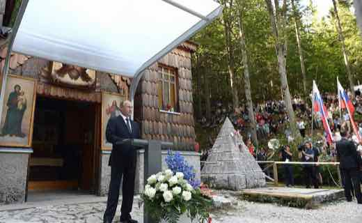
Putin semnează un decret care permite statului să preia temporar infrastructura neprotejată de atacurile ucrainene cu drone
Vladimir Putin a semnat luni, 24 august, un decret care permite statului rus să preia temporar controlul asupra unor obiective energetice, industriale, de…
Directorul CIA a făcut o vizită neanunțată la Moscova; SUA i-a cerut Ucrainei să suspende atacurile cât a durat
Directorul CIA, John Ratcliffe, a ajuns marți, 25 august, la Moscova pentru întâlniri cu oficiali ruși — prima sa vizită cunoscută în Rusia de când conduce…

Liderii PPE și Renew din Parlamentul European îi cer Ursulei von der Leyen să blocheze 770 de milioane de euro din PNRR din cauza „amendamentului Fritz”
Manfred Weber (PPE) și Valérie Hayer (Renew Europe), liderii celor mai mari două grupuri din Parlamentul European, i-au scris pe 24 august 2026 președintei…
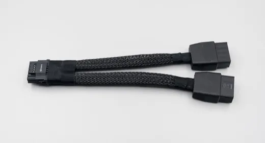
Nouă persoane, printre care angajați Nvidia și Super Micro din Taiwan, trimise în judecată pentru exportul ilegal către China a 74 de servere AI interzise
🌍 Parchetul din Keelung a trimis în judecată, pe 24-25 august 2026, nouă persoane — printre care un manager al filialei taiwaneze Nvidia și doi foști…

SUA a sancționat 60 de entități din mai multe țări, inclusiv zeci de firme chineze, pentru comerț cu Iranul. Beijingul respinge măsurile și promite să-și „apere ferm” interesele
🌍 Trezoreria SUA a anunțat luni, 24-25 august 2026, sancțiuni împotriva a 60 de entități din mai multe țări — printre care zeci de firme din China și Hong…

Pakistanul anunță "progres semnificativ" cu Iranul spre reactivarea armistițiului din Hormuz, prăbușit în iulie
🌍 Șeful armatei pakistaneze, mareșalul Asim Munir, și ministrul de Interne Mohsin Naqvi au mers luni, 24 august 2026, la Teheran, unde s-au întâlnit cu…

Seul și Washington vorbesc din nou după cinci luni de tăcere — Coreea de Sud promite să transforme apropierea lui Trump de Kim în discuții reale, dar Phenianul nu confirmă niciun contact
🌍 Ministrul de Externe sud-coreean Cho Hyun și secretarul de stat american Marco Rubio au vorbit luni seară, 24 august 2026, la telefon — prima convorbire…

Curtea Supremă a SUA permite parțial ordinul lui Trump privind votul prin corespondență — dar spune explicit că nu s-a pronunțat pe legalitatea lui
🌍 Curtea Supremă a SUA a ridicat, pe 24 august 2026, una din cele două suspendări care blocau ordinul executiv al lui Donald Trump privind listele DHS de…
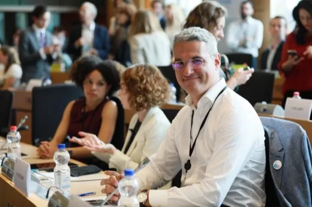
Legea salarizării: noua rundă de negocieri de la Cotroceni a eșuat din nou, Pîslaru avertizează că nu mai e timp de promulgare până pe 31 august
Președintele Nicușor Dan i-a reunit din nou, pe 25 august, la Cotroceni, pe liderii PSD, PNL, USR și UDMR pentru legea salarizării bugetarilor — iar…
Consilierul lui Isărescu a avertizat despre un „dezastru” economic; BNR spune că e opinie personală, nu poziția băncii
Eugen Rădulescu, consilier al guvernatorului BNR Mugur Isărescu, a scris pe Facebook că „demența politicienilor a ajuns la paroxism” și că urmează „scăderi…
O judecătoare federală din SUA anulează interdicția de vize a administrației Trump pentru cetățenii a 75 de țări
🌍 Judecătoarea federală Jeannette Vargas, de la Curtea Districtuală a SUA pentru Districtul de Sud al New York-ului, a decis vineri, 21 august 2026, că…

Nicușor Dan a promulgat două legi de ajutor de stat pentru crescătorii de porci și bovine — plafon de 50.000 de euro per fermă
Președintele Nicușor Dan a promulgat, luni, 24 august 2026, două legi de ajutor de stat pentru crescătorii de porci și bovine, motivate de efectele crizei…
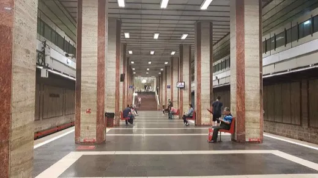
O dronă necunoscută a intrat din Republica Moldova în România — fragmente găsite în Vrancea, MApN: fără încărcătură explozivă
O țintă aeriană neidentificată a intrat luni, 24 august 2026, dinspre regiunea Odesa în spațiul aerian al Republicii Moldova, apoi în România, în zona…
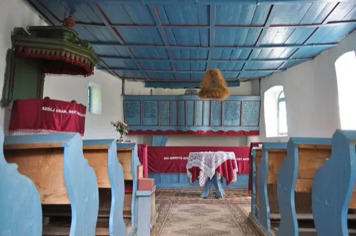
USR depune un nou proiect al Legii Integrității, fără prevederea care i-ar putea costa mandatul lui Dominic Fritz
Senatorii USR au depus marți, 25 august 2026, un proiect propriu de Lege a Integrității, care renunță la clauza ce ar duce la încetarea mandatului aleșilor…
Indicele Ifo al climatului de afaceri din Germania urcă la 88,8 în august 2026, cel mai ridicat nivel din ultimul an
Institutul Ifo din München a publicat marți, 25 august 2026, indicele lunar al climatului de afaceri din Germania: 88,8 puncte, al patrulea avans lunar…
Rialul iranian atinge un nou minim istoric — 2,02 milioane pentru un dolar — chiar înainte ca SUA să anunțe noi sancțiuni „economic D-Day”
🌍 Rialul iranian a atins luni, 24 august 2026, un nou minim istoric pe piața paralelă — 2,02 milioane de rial pentru un dolar, față de 1,53 milioane la…

Senatul a aprobat în plen, cu 67 la 41, comisia de anchetă privind întâlnirea nedeclarată Bolojan-Tănăsescu
Senatul a votat luni, 24 august 2026, cu 67 de voturi pentru și 41 împotrivă, înființarea unei comisii de anchetă parlamentară din 13 membri, care are 14…
SUA lansează „Operation Economic Outcast” împotriva Iranului — Bessent promite sancționarea unei mari bănci „până la finalul săptămânii”, Teheranul amenință cu blocarea Strâmtorii Hormuz
Secretarul Trezoreriei SUA, Scott Bessent, a anunțat luni, 24 august 2026, campania de sancțiuni secundare „Operation Economic Outcast” împotriva Iranului…
Marea Britanie va transfera planurile tehnice ale rachetei Storm Shadow/SCALP către Ucraina — Kremlinul vorbește despre „combustibil pe foc”
Cu ocazia întâlnirii „Coaliției celor dispuși” la Kiev, de Ziua Independenței Ucrainei (35 de ani), premierul britanic Andy Burnham a anunțat că Marea…
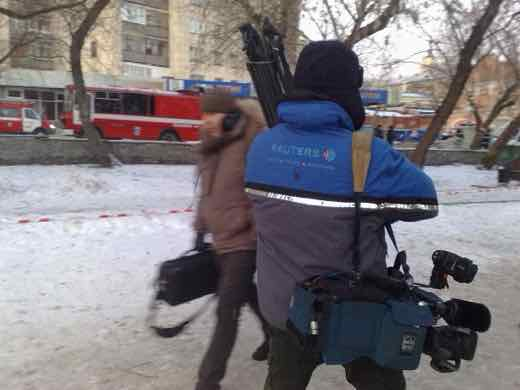
Sondaj Reuters/Ipsos: sprijinul american pentru războiul cu Iranul scade la 31%, aprobarea lui Trump rămâne la minimul mandatului
Un sondaj Reuters/Ipsos încheiat luni, 24 august 2026, arată sprijinul american pentru acțiunea militară în Iran la 31% — al treilea declin consecutiv față…
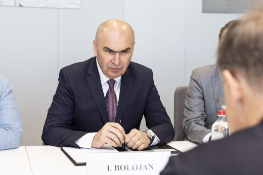
Legea salarizării rămâne blocată: echipele tehnice ale coaliției nu ajung la o concluzie la Cotroceni, șansele să treacă de Parlament până pe 31 august sunt „aproape zero”
Echipele tehnice ale partidelor din fosta coaliție s-au întâlnit luni, 24 august, la Palatul Cotroceni, fără să ajungă la o concluzie pe legea salarizării…
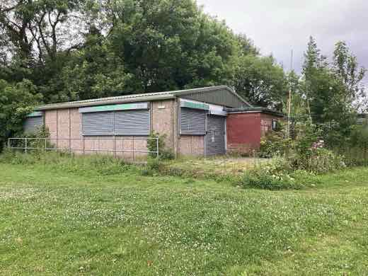
Șase state UE cer o taxă comună pe profiturile excepționale ale companiilor petroliere, pe fondul crizei din Golf
Germania, Italia, Austria, Polonia, Portugalia și Spania au cerut, într-o scrisoare comună, ca miniștrii de finanțe ai UE să discute pe 18-19 septembrie, la…

Camera Deputaților a adoptat noul text al Legii Integrității, după ce CCR a anulat declararea averii partenerilor demnitarilor
Camera Deputaților a votat luni, 24 august 2026, cu 183 pentru, 84 împotrivă și 3 abțineri, textul reexaminat al Legii integrității, după ce CCR a declarat…
Patru românce intră direct pe tabloul principal la US Open 2026 — Sorana Cîrstea, cap de serie 17
Sorana Cîrstea (locul 17 WTA), Jaqueline Cristian (41), Gabriela Ruse (73) și Irina Begu (82, cu ranking protejat după accidentare) au intrat direct pe…
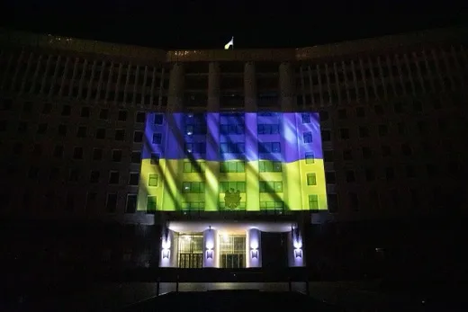
UE aprobă 6,1 miliarde de euro pentru apărarea aeriană a Ucrainei, chiar de Ziua Independenței
Comisia Europeană a anunțat luni, 24 august — Ziua Independenței Ucrainei —, un nou pachet de 6,1 miliarde de euro pentru achiziții de apărare aeriană…
Comisia Europeană cere României 4 miliarde de lei măsuri fiscale suplimentare înainte de legea salarizării — pe masă, extinderea CASS la pensii
Potrivit unor surse din negocieri, Bruxelles-ul nu acceptă anvelopa de 12 miliarde de lei a legii salarizării fără măsuri compensatorii de circa 4 miliarde…
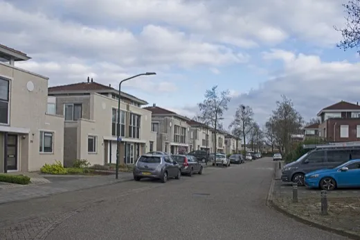
Trump a făcut peste 1.000 de tranzacții bursiere în iunie, între 78 și 263 de milioane de dolari — inclusiv pe Palantir, în jurul acordului cu Iranul
Declarația financiară obligatorie, publicată în august, arată că președintele Donald Trump a făcut peste 1.000 de tranzacții bursiere în iunie 2026, într-un…
ANAF a controlat 816 firme din transportul alternativ (Uber, Bolt): 423,8 milioane de lei obligații fiscale neplătite, arată datele Fiscului
ANAF a verificat 816 operatori economici din transportul alternativ — firme care lucrează prin platforme precum Uber și Bolt — de la începutul anului 2026…
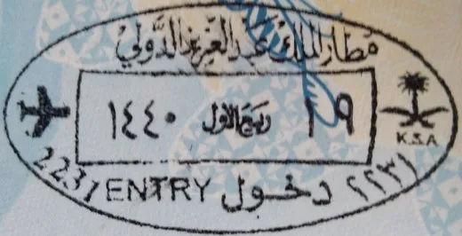
Arabia Saudită a pus discret transferurile bancare către Emiratele Arabe Unite sub control sporit, ca la țările cu risc ridicat. Riadul neagă orice restricție directă
🌍 Reuters relatează, citând trei surse cu cunoștințe directe, că băncile din Arabia Saudită au plasat transferurile către Emiratele Arabe Unite sub un nivel…
Plenul Senatului a respins definitiv cererea lui Nicușor Dan de reexaminare a legii hidrocentralelor din arii protejate
Curtea Constituțională a respins pe 12 august sesizarea președintelui Nicușor Dan pe legea (inițiată de senatorul Daniel Zamfir) care permite modificarea…
Africa de Sud: comisia de destituire vrea mărturia lui Ramaphosa, dar Curtea Constituțională blochează reluarea audierilor publice
Procedura de destituire a președintelui sud-african Cyril Ramaphosa, legată de dosarul „Phala Phala” (banii găsiți ascunși într-o canapea la ferma sa), a…
Zambia: Hichilema, reales cu 60,49%, în timp ce opoziția pregătește o contestație la Curtea Constituțională și denunță un raid armat
Comisia Electorală a Zambiei (ECZ) l-a declarat pe 18 august 2026 pe președintele Hakainde Hichilema câștigător al unui al doilea mandat, cu 60,49% din…
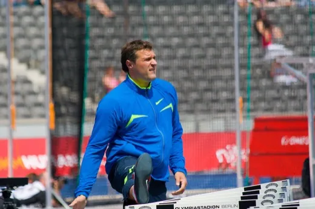
Mykolas Alekna doboară recordul Diamond League la disc, cu 72,58 metri la Silesia
Discobolul lituanian Mykolas Alekna a aruncat 72,58 metri duminică, 23 august 2026, la Memorialul Kamila Skolimowska din Silesia (Chorzów, Polonia) — un nou…

România, cea mai mare creștere a prețurilor la carburanți din UE — dar datele sunt dinainte de reducerea accizei
Eurostat a publicat pe 21 august 2026 datele pentru iulie: prețurile carburanților au crescut în România cu 24,2% față de iulie 2025 — cea mai mare creștere…

SUA au rambursat 100 de miliarde de dolari din tarifele vamale — dar banii merg la companii, nu la cumpărători
Administrația Trump a certificat 100 de miliarde de dolari în rambursări din cele 166 de miliarde de dolari colectate din tarifele vamale declarate ilegale…
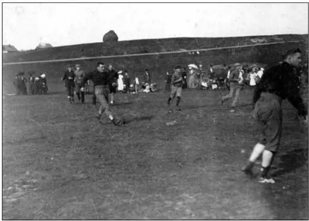
Dinamo învinge Universitatea Cluj 2-1, în inferioritate numerică, și devine lider în SuperLiga
Dinamo a învins-o pe Universitatea Cluj cu 2-1, sâmbătă, 22 august 2026, în etapa a 6-a din SuperLiga, deși a jucat în 10 oameni din minutul 67. Victoria o…

Argentina: reforma băncii centrale a lui Milei ajunge miercuri la vot, opoziția vede o portiță pentru împrumuturi noi
Camera Deputaților din Argentina votează miercuri, 26 august 2026, proiectul prin care președintele Javier Milei vrea să interzică prin lege finanțarea…

Cancelarul german Merz, huiduit la vizita în zona afectată de cel mai mare incendiu de vegetație al verii — a apărut public la două zile după stingerea focului
Cancelarul federal german Friedrich Merz a fost întâmpinat cu huiduieli și fluierături la Hürtgenwald (Renania de Nord-Westfalia), acolo unde a mers pe 22…

Prăbușirea minei de aur din Republica Centrafricană: bilanțul oficial e de 49 de morți, deși primele relatări vorbeau de peste 100
O galerie subterană a minei artizanale de aur de la Zamboye, în vestul Republicii Centrafricane, s-a prăbușit pe 18 august 2026. Ministrul Minelor, Rufin…

Queensland anunță pedepse minime obligatorii pentru minorii care încalcă cauțiunea. Închisorile statului sunt deja la 168% din capacitate
🌍 Guvernul statului australian Queensland a anunțat pe 23 august 2026 pedepse minime obligatorii cu închisoarea pentru minorii care comit o infracțiune cât…

Petrolul a crescut a doua săptămână la rând după amenințarea cu sancțiuni asupra partenerilor Iranului. Brent la 94,39 dolari
🌍 Barilul Brent a închis la 94,39 dolari pe 22 august 2026, în creștere cu 0,65% pe zi și 6,39% pe săptămână, după ce administrația americană a amenințat cu…

Avioane de vânătoare chinezești J-16 au ajuns în Egipt: prima desfășurare a modelului în Africa, după 6.000 de kilometri
🌍 Avioane chinezești J-16 au aterizat vineri, 22 august 2026, pe o bază aeriană din Egipt, pentru exercițiul comun „Eagles of Civilisation 2026”. SCMP…

Australia confirmă primul caz de gripă aviară H5 la un mamifer: o focă cu nas lung, găsită în sudul țării
🌍 Ministra federală a Agriculturii, Julie Collins, a anunțat pe 23 august 2026 primul caz confirmat de gripă aviară H5 la un mamifer în Australia — o focă cu…

Indonezia ia în calcul limitarea carburantului subvenționat după tipul mașinii. Deocamdată e o intenție, nu o decizie
🌍 Guvernul indonezian analizează folosirea tipului de vehicul drept criteriu pentru a stabili cine mai poate cumpăra Pertalite, benzina subvenționată RON 90…

Comisia ONU pentru drepturile omului avertizează că alegerile din Sudanul de Sud, programate în decembrie 2026, riscă să reaprindă conflictul și „crime de atrocitate”
Comisia ONU pentru Drepturile Omului în Sudanul de Sud a avertizat că „factori de risc multipli pentru crime de atrocitate converg” înaintea primelor alegeri…

Japonia execută primul condamnat la moarte sub guvernul Takaichi — incendiatorul de la un salon pachinko din Osaka, unde au murit 5 oameni în 2009
Sunao Takami, 58 de ani, a fost spânzurat pe 21 august 2026 la Osaka, condamnat pentru incendierea în 2009 a unui salon pachinko în care au murit 5 oameni și…
Trump scutește temporar de tarif carnea de vită importată peste cotă — critici spun că măsura nu rezolvă lipsa de vite din SUA
Donald Trump a anunțat pe 21 august 2026 că permite importul a 300.000 de tone de carne de vită tocată, fără tariful suplimentar impus peste cota OMC, timp…
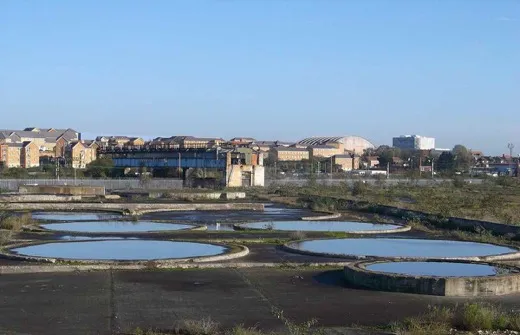
Oil Terminal Constanța intră în grevă pe 24 august, după ce statul a refuzat o majorare de 6,5%
Sindicatul de la cel mai mare terminal petrolier din Constanța, deținut în proporție de 87,76% de Ministerul Energiei, anunță declanșarea conflictului…

Tribunalul a respins insolvența STB pentru hârtii incomplete, nu pentru datorii inexistente — Ciucu invocă Kafka
Tribunalul București a respins pe 18 august cererea STB de intrare în insolvență — nu pentru că datoriile n-ar fi reale, ci pentru că firma nu a indicat…

CCR publică motivarea pe „amendamentul Fritz”: legea nu sancționează retroactiv, ci încheie un „mandat viciat” — USR acuză „fraudarea Constituției”
CCR a publicat motivarea deciziei din 17 august 2026 prin care a validat, cu 5 voturi la 3, prevederea care poate duce la pierderea mandatului primarului USR…